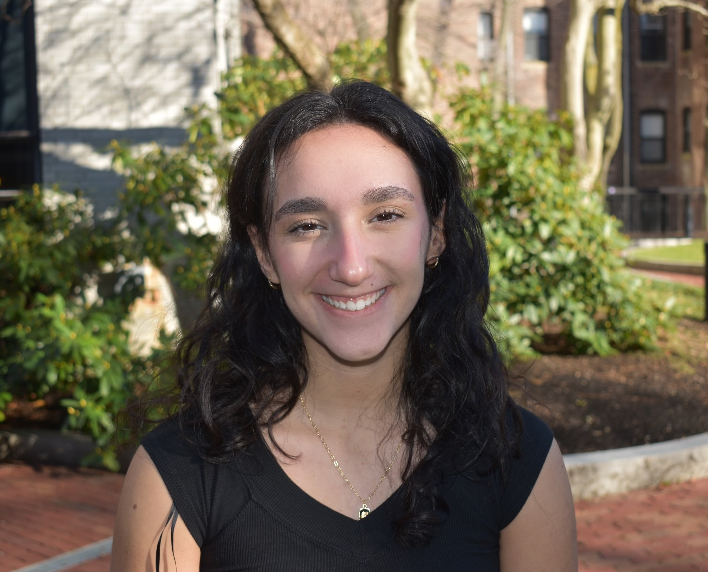

<!DOCTYPE html>
<html lang="en">
<head>
    <meta charset="UTF-8">
    <title>Title</title>
    <link rel="stylesheet" type="text/css" href="stylesheethome.css">


</head>
<body>

</body>
</html>

    <!-- this is the start of content -->
 <section class="header">
    <div class="Welcome">
        
       <a href="index.html" class="home-button">HOME</a>

        <a href="coursespage.html" class="courses-button">COURSES</a>
      <a href="projectspage.html" class="projects-button">PROJECTS</a>

        <div class="welcome-text">Arielle Rabinovich</div>

    </div>
    </section>

<!--main section-->
    <section class="main-content">
        <div class="content-box left-box">
            <h2>About Me</h2>
            <p><left>
            
                Hi! I'm Arielle Rabinovich. I'm a second-year Northeastern Student
            studying Data Science and Business Administration with a concentration
            in Accounting. I studied abroad in London my first semester, which allowed me to do a lot of travelling! (And take a lot of great photos).

                I am currently the web manager of the Huntington News and a member of Women in Tech.

            I grew up in Somerset County New Jersey, and love to spend my time playing and watching sports (particularly the Giants, Nets, and Red Sox),
                going to concerts, cooking, and going on
             roadtrips! I'm also an avid reader and NYT crossword solver. </left></p>
            <p><left>I got into Data Science because of my interest in sports analytics, but have grown
            to become fascinated by many of its applications, such as Natural Language Processing. I have explored
            languages such as Python, Java, and SQL from my courses.
                Through a Hackathon, I was first able to explore HTML and CSS and have since
            expanded on those skills, allowing me to grow my toolbox and create this site!
            After talking to a guest speaker in my Supply Chain Management course, I started to do
            some independent exploration of Tableau and R. </left></p>
            <p><left>When I first came to Northeastern, I knew I wanted to combine
            my Data Science degree with business, but I had no concentration in mind.
            Halfway through my second accounting class, I realized this was the subject
            for me. The logical and intuitive nature of accounting resonated with me,
                and I found that the convergence with Data Science felt completely natural.
            </left></p>
            <p><left>I am currently seeking co-ops or internships that provide an opportunity to
                apply my wide range of skills in real-world environments. The nature of my major
                has equipped me with a range of capabilities, spanning data analysis,
                statistical modeling, and financial accounting. I am keen to expand
                my overall analytical skills and grow from the influence of industry professionals.
                I enjoy learning on the go and immersing myself into projects to expand my skills.
                </left></p>
             <p><left>Feel free to reach out to me with any advice, opportunities
                 or industry insights, I am always eager to chat. Hope to connect with
                 you soon!


                </left></p>
        </div>
        <div class="content-box right-box">
            <h2>Contacts and Links</h2>
            <p>rabinovich.ar@northeastern.edu</p>
            <p>908-432-5537</p>
                <a href="https://github.com/ariellerabin">
                    <p> <lin>
                Github
                    </lin></p>
                   </a>

            <a href="https://www.linkedin.com/in/arielle-rabinovich-557728260/">
                    <p> <lin>
                LinkedIn
                    </lin></p>
                   </a>
        </div>
        <div class="content-box right-box-two">
            <h2>Education</h2>
            <p><strong>Northeastern University</strong>, expected graduation, May 2026</p>
            <ul>
            <li>3.96/4.0 GPA</li>
            <li>Web Manager of the Huntington News</li>
            <li>President of the Jewish Student Union</li>
            <li>Member of Women in Tech</li>
        </ul>
            <p><strong>Graduated Bernards Highschool</strong> in June 2022 </p>
             <ul>
            <li>Summa Cum Laude</li>
            <li>4.6/4.0 GPA</li>
            <li>Student Council President</li>
            <li>Varsity Field Hockey Captain</li>
            <li>Physics Achievement Award </li>
            <li>Good Citizens Award, Daughters of the American Revolution</li>
        </ul>
        </div>
    </section>

</body>
</html>


    </div>
</section>
